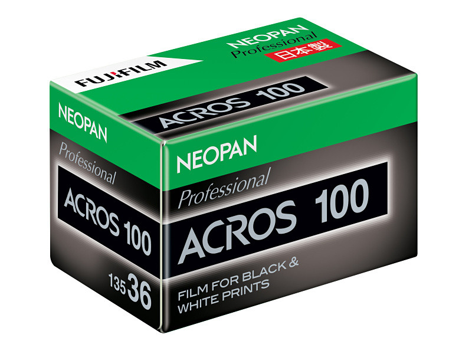

2026년 봄, 필름 시장이 두 가지 소식으로 출렁였다. 한쪽은 신작 출시, 한쪽은 정리 발표. 표면은 정반대지만 사실관계를 들여다보면 시장이 처한 같은 흐름의 두 얼굴이다.
코닥 VERITA 200D, 영화 현장에서 시작된 새로운 색
코닥이 영화용 컬러 네거티브 필름 VERITA 200D 를 정식 라인업에 더했다. ISO 200, 일광 균형, 65밀리·35밀리·16밀리 세 포맷이다. 코닥은 기존 VISION3 에 비해 다이내믹 레인지는 좁지만 더 농축된 색감, 따뜻한 피부 톤, 짙은 검정을 특징으로 내세웠다. HBO 드라마 〈Euphoria〉 의 새 시즌 촬영을 위해 개발됐다는 점이 출시 메시지에 자주 등장한다.
이 필름은 동네 사진점에서 한 롤씩 사올 수 있는 물건이 아니다. 코닥은 이를 영화와 광고 현장에 공급되는 영화용 특수 스톡으로 분류해, 영업 담당자를 통해서만 주문을 받는다. 사진가들이 흔히 쓰는 36컷짜리 35mm 필름통 형태로는 정식 유통되지 않는다는 뜻이다.
이런 출시 방식이 모순은 아니다. 코닥은 지난 몇 년간 영화용 큰 롤이 제삼자의 손을 거쳐 사진가용 작은 롤로 분할되고 재포장되는 우회로를 어느 정도 묵인해왔다. VERITA 200D 도 시간이 지나면 그런 경로로 사진가의 손에 닿을 가능성이 있다.
국내, 수석필름의 공급과 첫 사용 사례
국내 공급에 대해 수석필름이 자체 인스타그램을 통해 밝힌 바에 따르면, 16mm 롤을 먼저 들여놓을 계획이고 35mm 롤도 곧 이어 풀 예정이다. 영화와 광고 현장이 우선이라, 사진 시장에서 한 통씩 만나는 시점은 그보다 조금 더 걸릴 것으로 보인다.
흥미로운 건 첫 활용 사례가 이미 공개됐다는 점이다. 가수 화사의 새 싱글 〈So Cute〉(2026년 4월 9일 발매) 뮤직비디오가 VERITA 200D 로 촬영된 것으로 알려졌다. 코닥이 신작을 정식 발표한 시점과 거의 같은 달이다. 새 스톡이 발표 직후의 현장에서 곧장 쓰였다는 뜻이고, 국내 촬영팀이 신작 필름을 받아들이는 속도가 그만큼 빠르다는 신호이기도 하다. 다이내믹 레인지를 일부 좁히고 색감을 농축한 VERITA 200D 의 결이, 어린아이들과 함께 찍은 화사 MV 의 따뜻한 톤과 잘 맞아떨어지는 선택이었다.
Kodak VERITA 200D 소개 영상. 코닥 공식 제품 페이지 출처. © Eastman Kodak Company.
후지필름의 발표, 단종이 아니라 서비스 종료
비슷한 시기에 후지필름이 흑백 필름의 현상과 흑백 인화 제품을 정리한다고 발표했다. 마감은 2026년 7월 21일까지 받은 주문분. 발표가 짧고 영어 표현이 한 줄로 압축되어 옮겨지면서, 소셜 미디어에서는 "후지필름이 흑백 필름을 단종한다"는 식으로 빠르게 번졌다.
사실은 다르다. 종료되는 것은 후지필름 이미징 시스템스가 직접 운영하던 흑백 현상 처리 서비스와 그에 부속된 흑백 인화 제품이다. 자체 암실 설비가 약한 작은 사진점이 주문을 후지에 보내 처리받던 통로가 닫힌다는 의미다. 일반 시장에서 유통되는 흑백 인화지와 약품의 공급이 끊긴다는 뜻은 아니다.

후지의 유일한 흑백 필름인 Neopan 100 ACROS II 는 이번 발표에 포함되지 않았다. 다만 ACROS II 는 본래 후지의 전통 흑백 필름 생산이 2018년에 한 차례 중단된 이후, 2019년에 다른 코팅 파트너인 영국 일포드의 모회사 하먼의 도움으로 돌아온 제품이다. 후지의 흑백 라인은 이미 한참 전에 "본사가 직접 만드는 것"에서 "이름만 후지인 위탁 생산"으로 옮겨가 있었다.
두 발표의 함의
코닥의 신작 출시와 후지의 정리는 표면적으로 정반대로 읽힌다. 하지만 둘 다 같은 결론에 닿는다. 필름은 더 이상 대중 시장의 산업이 아니다.
코닥은 신작을 영화 현장의 운영 구조 안에 먼저 놓고, 일반 사진 시장은 우회로에 맡기는 분업을 굳혔다. 후지는 직접 운영하던 낮은 수익의 흑백 현상 인프라를 정리하고, 필름 자체는 외부 파트너의 공장에서 위탁받아 이름만 빌려주는 방식으로 좁혀간다. 두 회사가 줄곧 가고 있는 방향이 이번 봄에 한 번에 드러난 것에 가깝다.
소셜 미디어의 "후지 흑백 단종" 패닉이 보여준 건 한 가지다. 사진가들이 필름 한 종, 인화지 한 묶음, 현상 한 통이 사라지는 일에 얼마나 민감해졌는지. 그 민감함이 시장을 떠받치는 마지막 근육이기도 하다.
정리
- VERITA 200D 는 코닥의 새 영화용 컬러 네거티브. ISO 200, 65 · 35 · 16mm.
- 코닥은 영업 담당자를 통해서만 공급. 사진용 36컷 필름통으로는 정식 유통 안 됨.
- 국내는 수석필름이 16mm 먼저, 35mm 도 곧 풀 예정. 화사 〈So Cute〉 MV 가 첫 사용 사례.
- 후지필름은 흑백 필름 자체를 단종한 게 아니라, 직접 운영하던 흑백 현상·인화 서비스만 7월 21일자로 종료.
- ACROS II 는 그대로. 다만 후지의 흑백 라인은 이미 위탁 생산 구조다.
참고 출처: Kodak VERITA 200D 5206/7206 공식 페이지, 수석필름 인스타그램. 국내 공급 시점·가격, 후지필름 코리아 측 공식 입장은 별도 확인 필요. 본 기사의 박스 이미지는 코닥·후지필름 공식 자료.